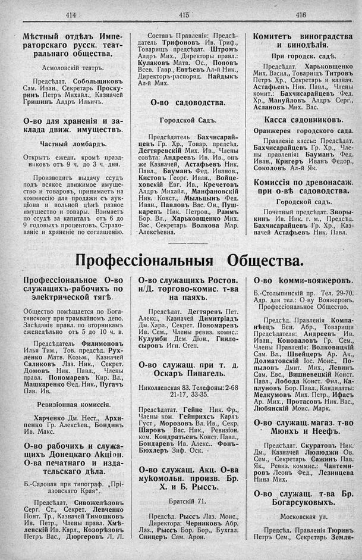

Лист источника 270
Скан

Распознанный текст
414
Мѣстный отдѣлъ Импе-
раторскаго русск. теат-
ральнаго общества.
Асмоловскій театръ.
Предсѣдат. Собольщиковъ
Сам. Иван., Секретарь Проску-
ринъ Петръ Михайл., Казначей
Гришинъ Алдръ Ильичъ.
О-во для храненія и за-
клада движ. имуществъ.
Частный ломбардъ.
Открытъ ежедн. кромѣ празд-
никовъ отъ 9 ч. до 3 ч. дня.
Производитъ выдачу ссудъ
подъ всякое движимое имуще-
ство и товаровъ, принимаетъ на
коммиссію для продажи съ аук-
ціона и вольной цѣнѣ разное
имущество и товары. Взимаетъ
по ссудѣ за капиталъ отъ 6 до
9 годовыхъ процентовъ. Страхо-
ваніе и храненіе по соглашенію.
415
Составъ Правленія: Предсѣ-
датель Трифоновъ Ив. Триф.,
Товарищъ предсѣдат. Штромъ
Алдръ Мих., Директоры правл.:
Кулаковъ Матв. Ос., Поповъ
Всев. Гавр., Евтѣевъ Ал-й Ник.,
Директоръ-распоряд. Найдыкъ
Ал-й Мих.
О-во садоводства.
Городской Садъ.
Предсѣдатель Бахчисарай-
цевъ Гр. Хр., Товар. предсѣд.
Дегтяревскій Мих. Ив., Члены
совѣта: Андреевъ Ив. Ив., онъ
же Казначей, Астафьевъ Ник.
Павл., Бауманъ Фед. Иванов.,
Кистовъ Георг. Иван., Войце-
ховскій Евг. Ив., Кречетовъ
Алдръ Михайл., Манфановскій
Ник. Конст., Мыльцынъ Фед.
Иван., Павловъ Вас. Он., Пуш-
каревъ Ник. Петров., Раммъ
Бор. Вл., Харьковщенко Мих.
Вас., Секретарь Волкова Мар.
Алексѣевна.
416
Комитетъ виноградства
и бинодѣлія.
При городск. садѣ.
Предсѣдат. Харьковщенко
Мих. Васил., Товарищъ Титровъ
Петръ Хр., Секретарь и казнач.
Астафьевъ Ник. Павл., Члены
комит.: Бахчисарайцевъ Фед.
Хр., Мануйловъ Алдръ Серг.,
Аслановъ Мих. Вас.
Касса садовниковъ.
Оранжерея городского сада.
Правленіе кассы: Предсѣдат.
Бахчисарайцевъ Гр. Хр., Чле-
ны правленія: Бауманъ Фед.
Иван., Кригеръ Иванъ Федор.,
Соколовъ Ал-й Як.
Комиссія по древонасаж.
при о-вѣ садоводства.
Городской садъ.
Почетный предсѣдат. Зворы-
кинъ Ив. Ник. г. м., Предсѣд.
Бахчисарайцевъ Гр. Хр., Каз-
начей Астафьевъ Ник. Павл.
Профессіональныя Общества.
Профессіональное О-во
служащихъ-рабочихъ по
электрической тягѣ.
Общество помѣщается по Бога-
тянскому при трамвайномъ депо.
Засѣданія правл. по вторникамъ
еженедѣльно отъ 5 до 10 ч. в.
Предсѣдатель Филимоновъ
Илья Тим., Тов. предсѣд. Рух-
ленко Матв. Козьм., Казначей
Саликовъ Лаз. Ник., Секрет.
Домовъ Ник. Павл., Члены
правл. Пономаревъ Кир. Вл.,
Машкаренко Ѳед. Ник., Пугачъ
Пав. Ив.
Ревизіонная комиссія.
Харченко Дм. Нест., Архи-
пенко Гр. Алексѣев., Бондинъ
Ив. Макс.
О-во рабочихъ и служа-
щихъ Донецкаго Акціон.
О-ва печатнаго и изда-
тельскаго дѣла.
Б.-Садовая при типограф. „Прі-
азовскаго Края“.
Предсѣдат. Сивожелѣзовъ
Серг. Ст., Секрет. Левченко
Понт. Тр., Казначей Тимошковъ
Ив. Петр., Члены правл. Хмѣ-
левскій Ив. Карл., Козорѣзовъ
Петръ Вас., ДюBorderовъ Л. Л.
О-во служащихъ Ростов.
н/Д. торгово-комис. т-ва
на паяхъ.
Предсѣдат. Дегтяревъ Пет.
Алекс., Казначей Димитріадъ
Дм. Харл., Секрет. Пономаревъ
Ив. Сем., Члены ревиз. комис.:
Кулумби Дем. Діон., Гнило-
сыровъ Игн. Степ.
О-во служащ. при т. д.
Оскаръ Пинагель.
Николаевская 83. Телефоны: 2-68
21-17, 33-35.
Предсѣдатат. Гейне Ник. Фр.,
Члены ком. Гейнрихсъ Карлъ
Густ, Морозовъ Вл. Ив., Секр.
Шаровъ Вас. Ник., Ревизіон.
ком. Кондратьевъ Конст. Павл.,
Бондаревъ Ив. Алекс.. Фонъ-
Бюхлеръ Зиф. Оск.
О-во служащ. Акц. О-ва
мукомольн. произв. Бр.
Х. и Б. Рыссъ.
Братскій 71.
Предсѣд. Рыссъ Лаз. Моис.,
Директора: Черниковъ Абр.
Лаз., Рыссъ Бор. Бор., Бухгал.
Сницеръ Сам. Арон.
О-во комми-вояжеровъ.
Б.-Столыпинскій пр. Тел. 29-70.
Адр. для тел.: О-ву Вояжеровъ.
Профессіональное Общество.
Предсѣд. Правленія Компа-
нѣецъ Бен. Абр., Товарищи
Предсѣдателя: Андреевъ Ив.
Иван., Коноваловъ Гр. Сем.,
Члены Правленія: Волковицкій
Сам. Вл., Швейцеръ Ар. Ак.,
Долматовскій Іос. Моис., По-
пыловъ Дмит. Мих., Левинъ
Сам. Евс., Вишневецкій Конст.
Павл., Лобода Конст. Фил., Ка-
плуновъ Бор. Павл., Кандидаты:
Мелкумовъ Мих. Петр., Ифасъ
Ар. Мих., Протасовъ Ник. Вас.,
Любянскій Моис. Марк.
О-во служащ. магаз. т-во
Мюнхъ и Неефъ.
Предсѣдат. Скуратовъ Ник.
Дм., Казначей Люлюджи Ов.
Сем., Секретарь Сажинъ Пав.
Як., Ревиз. коммис.: Чантеми-
ровъ Леонъ Фед., Лезинцева
Нина Мих.
О-во служащ. т-ва Бр.
Богарсуковыхъ.
Московская ул.
Предсѣд. Правленія Тюринъ
Петръ Сем., Секретарь Земля-